Longitudinal carriage: validation of contig-cluster approach
contig-clusters.RmdIntroduction and Methods
Reviewers of the manuscript asked for more detail on the contig cluster analysis. This is provided below; two additional analyses are provided. First, I explore the stability of the clusters to changing the parameters of the clustering algorithm. The clusters were originally defined using cd-hit with no length cutoff, and a sequence identity of 0.95 (with kmer length 10); in this sensitivity analysis, the length cutoff (of smaller sequences relative to the largest in the cluster) was varied from 0 to 0.8 in steps of 0.2 (with sequence identity held at 0.95), and sequence identity of the smaller sequences to the cluster representative was varied from 0.95 to 1 in steps of 0.01.
The effect of these changes was assessed in two ways: first, by plotting cumulative cluster membership: that is, ordering clusters from largest to smallest along the x axis, and plotting the cumulative proportion of samples that are clustered as the number of clusters increases. Secondly, by plotting network graphs of clusters. In these plots, points are clusters with point size determined by cluster size. As length or sequence identifty cutoff is changed, the clusters fragment, so the points become smaller. Points containing the same samples are linked by lines, showing how clusters fragment. The graphs are plotted as directed acyclic graphs: in each case, the original clusters are at the top of the page and then the clusters with higher length or sequence identity cutoff are sequentially below.
The second analysis consists of generating multiple sequence alignments of the clusters themselves, then visualising them with the sequence coverage of the cluster representative sample, along with measures of sequence diversity. Multiple sequence alignments were generated by mapping the contigs to the cluster representative sequence with minimap2 v2.16 and the -asm5 presets. SAM files were used to generate a multiple sequence alignment then nucleotide diversity at each position calculated using PopGenome v2.7.5 in R.
Alignments were plotted from the generated PAF files with coverage of the reference sequence indicated by colour. Secondary alignments are shown with dashed outlines. Plots are in order of cluster size from largest to smallest. BLAST using the ISfinder, SRST2 versuion of ARG-ANNOT, and plasmidfinder databases were used to identify insertion sequences, AMR genes and plasmid replicons, respectively. Genes were filtered by bitscore to produce a single gene at any location; if multiple genes had the same bitscore then they are labelled by group (i.e. amr gene family or IS group) rather than being identified to gene level.
library(blantyreESBL)
library(igraph)
#>
#> Attaching package: 'igraph'
#> The following objects are masked from 'package:stats':
#>
#> decompose, spectrum
#> The following object is masked from 'package:base':
#>
#> union
library(ggraph)
#> Loading required package: ggplot2
library(tidygraph)
#>
#> Attaching package: 'tidygraph'
#> The following object is masked from 'package:igraph':
#>
#> groups
#> The following object is masked from 'package:stats':
#>
#> filter
library(dplyr)
#>
#> Attaching package: 'dplyr'
#> The following objects are masked from 'package:igraph':
#>
#> as_data_frame, groups, union
#> The following objects are masked from 'package:stats':
#>
#> filter, lag
#> The following objects are masked from 'package:base':
#>
#> intersect, setdiff, setequal, union
library(ggplot2)
library(stringr)
library(forcats)
library(purrr)
#>
#> Attaching package: 'purrr'
#> The following objects are masked from 'package:igraph':
#>
#> compose, simplify
library(PopGenome)
#> Loading required package: ff
#> Loading required package: bit
#>
#> Attaching package: 'bit'
#> The following object is masked from 'package:base':
#>
#> xor
#> Attaching package ff
#> - getOption("fftempdir")=="/var/folders/qc/twvrz5kx0gj2lrt4n8wtk1ym0000gn/T//RtmpNmD3wC/ff"
#> - getOption("ffextension")=="ff"
#> - getOption("ffdrop")==TRUE
#> - getOption("fffinonexit")==TRUE
#> - getOption("ffpagesize")==65536
#> - getOption("ffcaching")=="mmnoflush" -- consider "ffeachflush" if your system stalls on large writes
#> - getOption("ffbatchbytes")==16777216 -- consider a different value for tuning your system
#> - getOption("ffmaxbytes")==536870912 -- consider a different value for tuning your system
#>
#> Attaching package: 'ff'
#> The following objects are masked from 'package:utils':
#>
#> write.csv, write.csv2
#> The following objects are masked from 'package:base':
#>
#> is.factor, is.ordered
library(viridis)
#> Loading required package: viridisLite
library(patchwork)
library(here)
#> here() starts at /Users/joelewis/R/packages/blantyreESBL
library(IRanges)
#> Loading required package: BiocGenerics
#>
#> Attaching package: 'BiocGenerics'
#> The following objects are masked from 'package:dplyr':
#>
#> combine, intersect, setdiff, union
#> The following objects are masked from 'package:igraph':
#>
#> normalize, path, union
#> The following objects are masked from 'package:stats':
#>
#> IQR, mad, sd, var, xtabs
#> The following objects are masked from 'package:base':
#>
#> anyDuplicated, append, as.data.frame, basename, cbind, colnames,
#> dirname, do.call, duplicated, eval, evalq, Filter, Find, get, grep,
#> grepl, intersect, is.unsorted, lapply, Map, mapply, match, mget,
#> order, paste, pmax, pmax.int, pmin, pmin.int, Position, rank,
#> rbind, Reduce, rownames, sapply, setdiff, sort, table, tapply,
#> union, unique, unsplit, which.max, which.min
#> Loading required package: S4Vectors
#> Loading required package: stats4
#>
#> Attaching package: 'S4Vectors'
#> The following objects are masked from 'package:dplyr':
#>
#> first, rename
#> The following objects are masked from 'package:tidygraph':
#>
#> active, rename
#> The following objects are masked from 'package:base':
#>
#> expand.grid, I, unname
#>
#> Attaching package: 'IRanges'
#> The following object is masked from 'package:purrr':
#>
#> reduce
#> The following objects are masked from 'package:dplyr':
#>
#> collapse, desc, slice
#> The following object is masked from 'package:tidygraph':
#>
#> slice
library(ggnewscale)
library(ggrepel)
write_figs <- TRUE
if (write_figs) {
if (!dir.exists(here("figures"))) {dir.create(here("figures"))}
if (!dir.exists(here("tables"))) {dir.create(here("tables"))}
if (!dir.exists(here("figures/long-modelling"))) {
dir.create(here("figures/long-modelling"))
}
if (!dir.exists(here("tables/long-modelling"))) {
dir.create(here("tables/long-modelling"))
}
}Results
Varying length and sequence identity cutoff in clsutering algorithm
Cumulative cluster membership plots
Clusters are stable to increasing length cutoff, and increasing sequence identity - up to 100%, when the clusters fragment.
# function to restrict axes to integers
int_breaks_rounded <- function(x, n = 5) {
pretty(x, n)[round(pretty(x, n),1) %% 1 == 0]
}
# cluster cumulative membership: varying length cutoff ----------------
btESBL_contigclusters_sensax %>%
filter(ident_cutoff == 0.95) %>%
transmute(
id = gsub("^\\.", "", contig),
clstr = as.character(cluster),
gene = gsub("_", "", gene),
len_diff_cutoff = len_diff_cutoff,
ident_cutoff = ident_cutoff
) %>%
mutate(clstr = paste0(
clstr,
"_",
gsub("_", "", gene),
"_l",
len_diff_cutoff,
"_i",
ident_cutoff
)) %>%
bind_rows(
btESBL_contigclusters %>%
transmute(
id = id,
gene = gsub("_", "", gene),
len_diff_cutoff = 0,
ident_cutoff = 0.95,
clstr = paste0(
str_extract(clstr_name, "(?<=\\.)[0-9]*$"),
"_",
str_extract(clstr_name, ".*(?=\\.)"),
"_l",
len_diff_cutoff,
"_i",
ident_cutoff
)
)
) %>%
group_by(len_diff_cutoff, gene) %>%
mutate(
n_gene = n()
) %>%
group_by(gene) %>%
mutate(
gene = paste0(gene, " (n = ", max(n_gene), ")")
) %>%
ungroup() %>%
mutate(
gene = fct_rev(fct_reorder(gene, n_gene, .fun = max))
) %>%
group_by(len_diff_cutoff, clstr, gene) %>%
summarise(n = n()) %>%
arrange(gene, len_diff_cutoff, -n) %>%
group_by(gene, len_diff_cutoff) %>%
mutate(n_clust = 1:n()) %>%
mutate(
prop = cumsum(n) / sum(n)
) %>%
# addd skanky (0,0) start
group_by(gene, len_diff_cutoff, ) %>%
arrange(gene, len_diff_cutoff, n_clust) %>%
do(add_row(., .before = 1, prop = 0, n_clust = 0)) %>%
ungroup() %>%
do(tidyr::fill(., c(len_diff_cutoff, gene), .direction = "up")) %>%
ggplot(aes(n_clust,
prop,
group = len_diff_cutoff,
color = len_diff_cutoff
)) +
geom_step() +
facet_wrap(~gene, scales = "free_x") +
labs(
x = "Number of clusters",
y = "Cumulative number of samples",
color = "CD-HIT\nlength cutoff"
) +
theme_bw() +
scale_x_continuous(breaks = int_breaks_rounded) -> len_plot
len_plotCumulative proportion of samples that are included in a cluster as a function of number of clusters, stratified by ESBL gene. CLusters are ordered on the x-axis from smallest to largest. Number of samples in which a given ESBL geen was found is shown in the panel header. The coloured lines show the effect of varying the sequence length cutoff in the clustering algorithm.
if (write_figs) {
ggsave(here("figures/long-modelling/SUP_FIG_contig_sensax_lenplot.pdf"),
len_plot,width = 9, height = 6)
ggsave(here("figures/long-modelling/SUP_FIG_contig_sensax_lenplot.svg"),
len_plot,width = 9, height = 6)
}
btESBL_contigclusters_sensax %>%
filter(len_diff_cutoff == 0) %>%
transmute(
id = gsub("^\\.", "", contig),
clstr = as.character(cluster),
gene = gsub("_", "", gene),
len_diff_cutoff = len_diff_cutoff,
ident_cutoff = ident_cutoff
) %>%
mutate(clstr = paste0(
clstr,
"_",
gsub("_", "", gene),
"_l",
len_diff_cutoff,
"_i",
ident_cutoff
)) %>%
bind_rows(
btESBL_contigclusters %>%
transmute(
id = id,
gene = gsub("_", "", gene),
len_diff_cutoff = 0,
ident_cutoff = 0.95,
clstr = paste0(
str_extract(clstr_name, "(?<=\\.)[0-9]*$"),
"_",
str_extract(clstr_name, ".*(?=\\.)"),
"_l",
len_diff_cutoff,
"_i",
ident_cutoff
)
)
) %>%
group_by(ident_cutoff, gene) %>%
mutate(
n_gene = n()
) %>%
group_by(gene) %>%
mutate(
gene = paste0(gene, " (n = ", max(n_gene), ")")
) %>%
ungroup() %>%
mutate(
gene = fct_infreq(gene)
) %>%
group_by(ident_cutoff, clstr, gene) %>%
summarise(n = n()) %>%
arrange(gene, ident_cutoff, -n) %>%
group_by(gene, ident_cutoff) %>%
mutate(n_clust = 1:n()) %>%
mutate(
prop = cumsum(n) / sum(n)
) %>%
# addd skanky (0,0) start
group_by(gene, ident_cutoff, ) %>%
arrange(gene, ident_cutoff, n_clust) %>%
do(add_row(., .before = 1, prop = 0, n_clust = 0)) %>%
ungroup() %>%
do(tidyr::fill(., c(ident_cutoff, gene), .direction = "up")) %>%
ggplot(aes(n_clust,
prop,
group = ident_cutoff,
color = ident_cutoff
)) +
geom_step() +
facet_wrap(~gene, scales = "free_x") +
labs(
x = "Number of clusters",
y = "Cumulative number of samples",
color = "CD-HIT\nidentity cutoff"
) +
theme_bw() +
scale_x_continuous(breaks = int_breaks_rounded) -> ident_plot
ident_plotCumulative proportion of samples that are included in a cluster as a function of number of clusters, stratified by ESBL gene. CLusters are ordered on the x-axis from smallest to largest. Number of samples in which a given ESBL geen was found is shown in the panel header. The coloured lines show the effect of varying the sequence identity cutoff in the clustering algorithm.
Directed acyclic graphs of cluster membership
# plotting functions ----------------------
return_cluster_plot_df <-
function(sample_cluster_df, gene_to_plot, cluster_cutoff,
len_cutoff_vec = c(0, 0.2, 0.4, 0.6, 0.8),
ident_cutoff_vec = c(0.95, 0.95, 0.95, 0.95, 0.95)) {
if (length(len_cutoff_vec) != length(ident_cutoff_vec)) {
stop("Different vector lengths in return_cluster_plot_df")
}
if (length(len_cutoff_vec) < 2) {
stop("Need at least 2 len_ and ident_ cutoff values")
}
# assume a data frame with
# id = cntig id
# clstre = cluster id
# gene = gene
# len_dfiff_cutoff
# idnet_cutoff
# l
# This will plot 5 layers - a is top, defined by the len and ident_cutoffs
# provided; b next, -> c , etc
# clsuter_cutoff will plot only clusters in row a of size >= cluster cutoff
# the len_cut
# the strategy:
# 1) make a df of each unique set of len and ident_cutoffs
# 2) left join df a to df b by sample id - the clusters in dfa become
# clst.x and the clsuters in dfb become clst.y.
# 3) group by clust.x and xlust y and tally
# 4) Add in other dfs in same way
dfa <-
sample_cluster_df %>%
filter(
gene == gene_to_plot,
len_diff_cutoff == len_cutoff_vec[1],
ident_cutoff == ident_cutoff_vec[1]
)
dfb <- sample_cluster_df %>%
dplyr::filter(
gene == gene_to_plot,
len_diff_cutoff == len_cutoff_vec[2],
ident_cutoff == ident_cutoff_vec[2]
)
left_join(
dfa %>%
select(id, clstr) %>%
group_by(clstr) %>%
mutate(clst.size = n()) %>%
filter(clst.size >= cluster_cutoff),
dfb %>%
select(id, clstr) %>%
group_by(clstr) %>%
mutate(clst.size = n()),
by = "id"
) %>%
group_by(clstr.x, clst.size.x, clstr.y, clst.size.y) %>%
tally() %>%
transmute(
from_clst_size = clst.size.x,
from = clstr.x,
to_clst_size = clst.size.y,
to = clstr.y,
n = n
) ->
edges
bind_rows(
dfa %>%
filter(clstr %in% edges$from),
dfb %>%
filter(clstr %in% edges$to)
) %>%
group_by(
clstr, len_diff_cutoff,
ident_cutoff
) %>%
summarise(size = n()) -> nodes
if (length(len_cutoff_vec) > 2) {
for (i in 3:length(len_cutoff_vec)) {
sample_cluster_df %>%
filter(
len_diff_cutoff == len_cutoff_vec[i],
ident_cutoff == ident_cutoff_vec[i],
gene == gene_to_plot
) -> dfc
add_next_edge_layer(edges, dfb, dfc) -> newedges
add_new_nodes(newedges, dfc) -> newnodes
nodes <- bind_rows(nodes, newnodes)
edges <- bind_rows(edges, newedges)
dfb <- dfc
}
}
tbl_graph(
nodes = nodes,
edges = edges,
directed = TRUE
) -> out_graph_df
return(out_graph_df)
}
add_next_edge_layer <- function(edges, dfb, dfc) {
left_join(
dfb %>%
filter(clstr %in% edges$to) %>%
select(id, clstr) %>%
group_by(clstr) %>%
mutate(clst.size = n()),
dfc %>%
select(id, clstr) %>%
group_by(clstr) %>%
mutate(clst.size = n()),
by = "id"
) %>%
group_by(clstr.x, clst.size.x, clstr.y, clst.size.y) %>%
tally() %>%
transmute(
from_clst_size = clst.size.x,
from = clstr.x,
to_clst_size = clst.size.y,
to = clstr.y,
n = n
) ->
edges_new
return(edges_new)
}
add_new_nodes <- function(edges, dfc) {
dfc %>%
filter(clstr %in% edges$to) %>%
group_by(clstr, len_diff_cutoff, ident_cutoff) %>%
summarise(size = n()) -> nodes_new
return(nodes_new)
}
min_cluster_size_picker <- function(df, gene , cutoff = 20, size = 5, len = 0, seq = 0.95) {
df %>%
filter(gene == {{gene}},
len_diff_cutoff == len,
ident_cutoff == seq) -> df
if (length(unique(df$clstr)) > cutoff) {
returnval <- size
} else {
returnval <- 1
}
return(returnval)
}
### prepare data -----------------------------------------
btESBL_contigclusters_sensax %>%
transmute(
id = gsub("^\\.", "", contig),
clstr = as.character(cluster),
gene = gsub("_", "", gene),
len_diff_cutoff = len_diff_cutoff,
ident_cutoff = ident_cutoff
) %>%
mutate(clstr = paste0(
clstr,
"_",
gsub("_", "", gene),
"_l",
len_diff_cutoff,
"_i",
ident_cutoff
)) %>%
bind_rows(
btESBL_contigclusters %>%
transmute(
id = gsub("^\\.", "", id),
gene = gsub("_", "", gene),
len_diff_cutoff = 0,
ident_cutoff = 0.95,
clstr = paste0(
str_extract(clstr_name, "(?<=\\.)[0-9]*$"),
"_",
str_extract(clstr_name, ".*(?=\\.)"),
"_l",
len_diff_cutoff,
"_i",
ident_cutoff
)
)
) -> sample_cluster_df
genes <- sample_cluster_df %>%
group_by(gene) %>%
tally() %>%
arrange(desc(n)) %>%
pull(gene)
purrr::map(genes,
~ return_cluster_plot_df(
sample_cluster_df, .x,
min_cluster_size_picker(sample_cluster_df,.x,20,5),
len_cutoff_vec = c(0,0,0,0,0),
ident_cutoff_vec = c(0.95, 0.97, 0.98, 0.99, 1.00)) %>%
ggraph(layout = "sugiyama") +
geom_edge_link(aes(edge_width = n), alpha = 0.7, show.legend = FALSE) +
geom_node_point(aes(size = size, color = as.factor(ident_cutoff))) +
labs(color = "CD-HIT\nsequence\nidentity",
size = "Cluster\nsize",
title = .x,
subtitle =
if_else(
min_cluster_size_picker(sample_cluster_df,.x,20,5) > 1,
paste0("Restricted to clusters of at least ",
min_cluster_size_picker(sample_cluster_df,.x,20,5),
" samples"),
"All clusters shown")) +
scale_color_viridis_d() +
theme_void()
) -> seq_ident_dag_plots
purrr::map(genes,
~ return_cluster_plot_df(
sample_cluster_df, .x,
min_cluster_size_picker(sample_cluster_df,.x,20,5),
len_cutoff_vec = c(0,0.2,0.4,0.6,0.8),
ident_cutoff_vec = c(0.95, 0.95, 0.95, 0.95, 0.95)) %>%
ggraph(layout = "sugiyama") +
geom_edge_link(aes(edge_width = n), alpha = 0.7, show.legend = FALSE) +
geom_node_point(aes(size = size, color = as.factor(len_diff_cutoff))) +
labs(color = "CD-HIT\nlength\ncutoff",
size = "Cluster\nsize",
subtitle =
if_else(
min_cluster_size_picker(sample_cluster_df,.x,20,5) > 1,
paste0("Restricted to clusters of at least ",
min_cluster_size_picker(sample_cluster_df,.x,20,5),
" samples"),
"All clusters shown"),
title = .x) +
scale_color_viridis_d() +
theme_void()
) -> len_cutoff_dag_plotsVarying sequence identity
for (i in 1:length(seq_ident_dag_plots)) {
print(seq_ident_dag_plots[[i]])
if (write_figs) {
ggsave(here(
paste0(
"figures/long-modelling/SUP_FIG_contig_seqidentdag_",
seq_ident_dag_plots[[i]]$labels$title,
".pdf"
)), seq_ident_dag_plots[[i]],
width = 6, height = 4
)
ggsave(here(
paste0(
"figures/long-modelling/SUP_FIG_contig_seqidentdag_",
seq_ident_dag_plots[[i]]$labels$title,
".svg"
)), seq_ident_dag_plots[[i]],
width = 6, height = 4
)
}
} 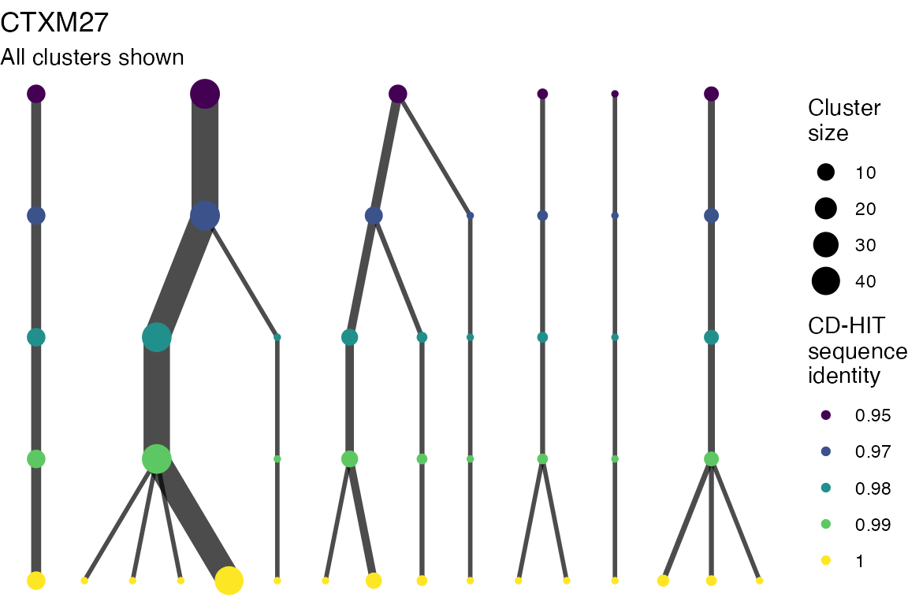
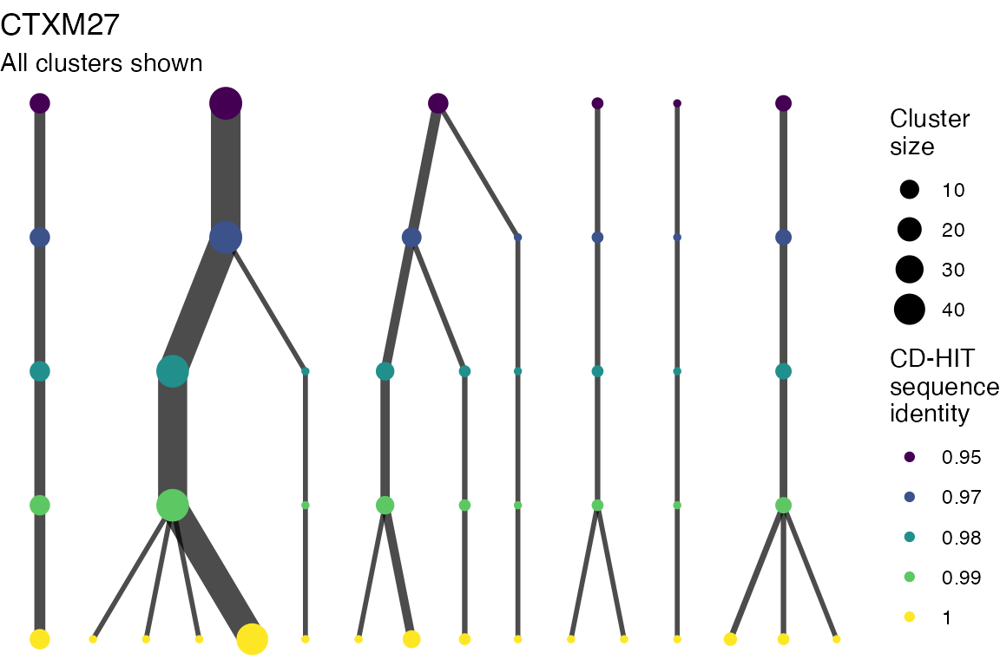 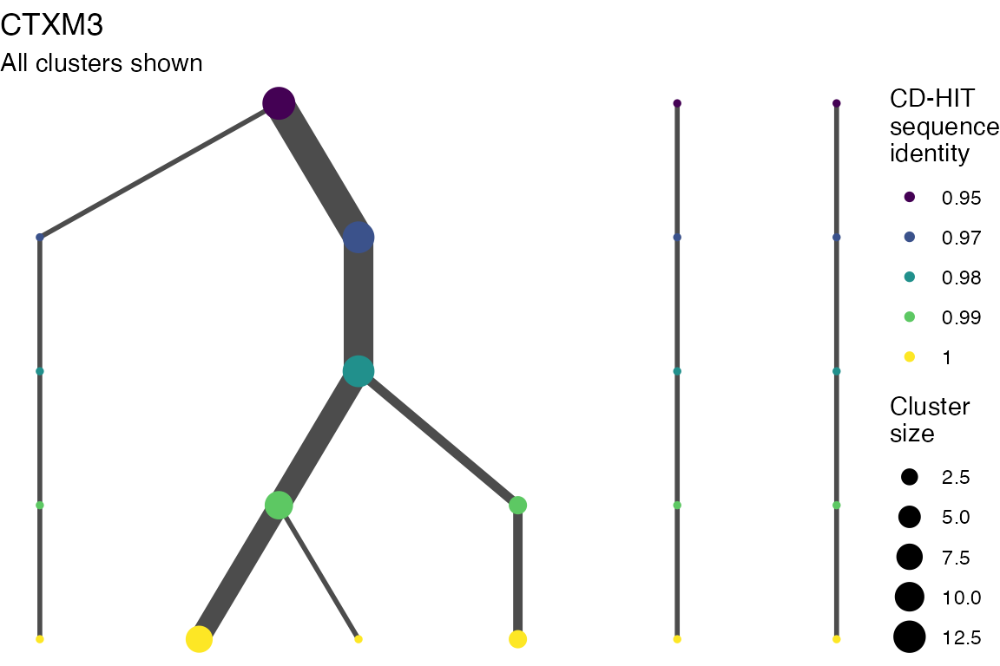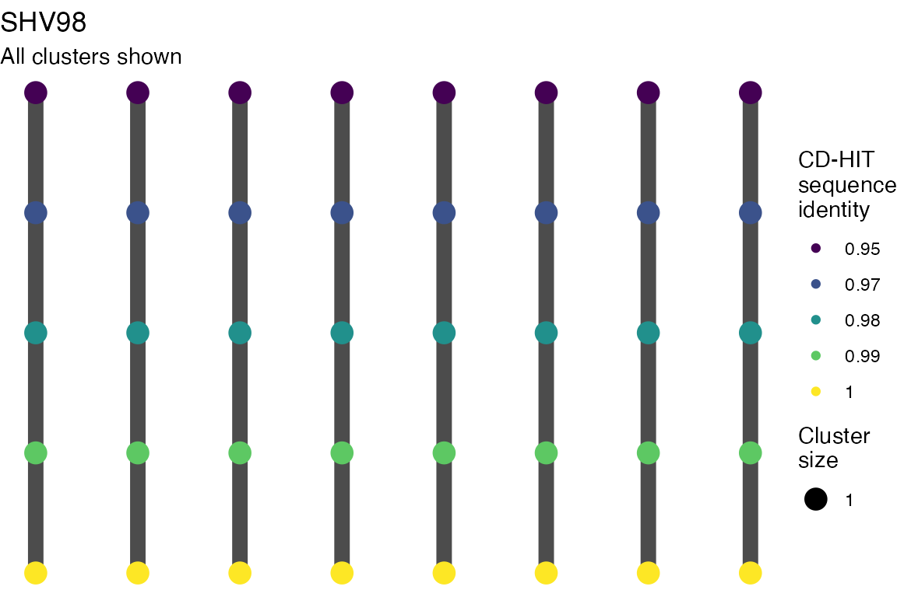
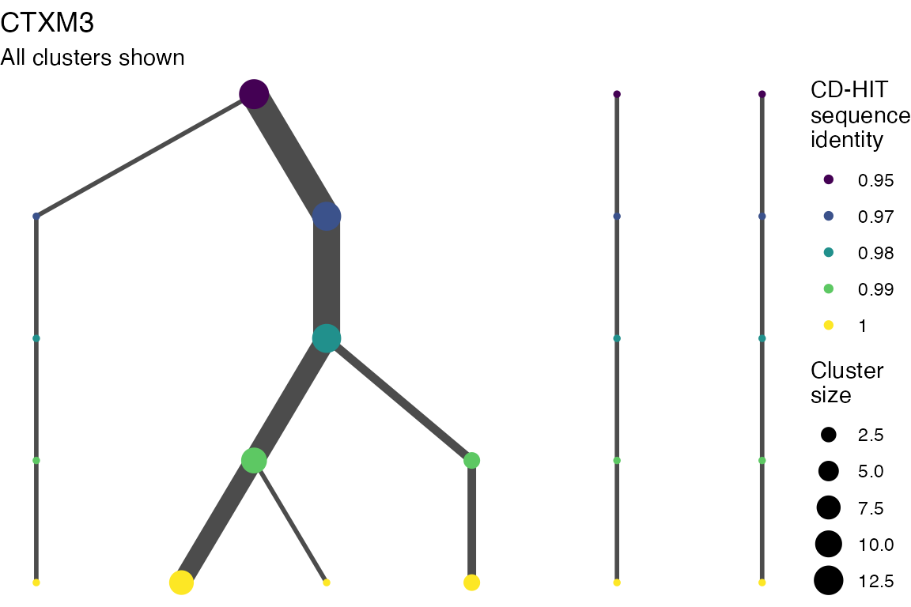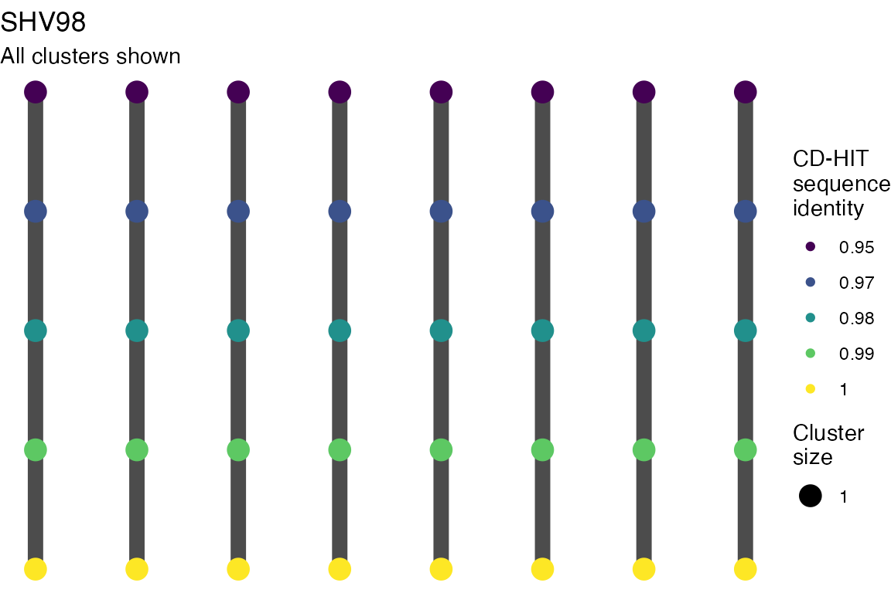
Varying length cutoff
for (i in 1:length(len_cutoff_dag_plots)) {
print(len_cutoff_dag_plots[[i]])
if (write_figs) {
ggsave(here(
paste0(
"figures/long-modelling/SUP_FIG_contig_lendag_",
len_cutoff_dag_plots[[i]]$labels$title,
".pdf"
)), len_cutoff_dag_plots[[i]],
width = 6, height = 4
)
ggsave(here(
paste0(
"figures/long-modelling/SUP_FIG_contig_lendag_",
seq_ident_dag_plots[[9]]$labels$title,
".svg"
)), seq_ident_dag_plots[[i]],
width = 6, height = 4
)
}
}
Multiple sequence alignments
Plots are shown for top 10 largest clusters which contain 248/714 ESBl containing contigs. Asterisk on gene name indicates identification of gene to group only.
# The blast output contains lots of genes which overlap
# need to pick one for each position
# functions for cleaning up blast output for plotting -----------------
# this will merge all overlapping matches
# then label them with range_group id using IRanges
add_range_group_ids <- function(qstart, qend, sseqid) {
ir <- IRanges(qstart, qend, names = sseqid)
range_group <- subjectHits(findOverlaps(ir, reduce(ir)))
return(range_group)
}
# This should be passed each range_group df
# if only one top bitscore
# select that_
# if ties - selct sseqid_group if they are all one group
# if they are different groups, give a warning
pick_best_fitting_gene <- function(df) {
# restrict only to top fittinmg bitscoire
df %>%
ungroup() %>%
filter(bitscore == max(bitscore)) -> df
if (nrow(df) == 1) {
# if only one - set gene to sseqid gene
df %>%
mutate(
gene = sseqid_gene,
duplicate_flag = 0
) %>%
select(-c(sseqid_group, sseqid_gene)) -> df
} else {
# if more than one top bitscore
if (length(unique(df$sseqid_group)) == 1) {
# if they are all same group, use group
df %>%
arrange(desc(pident), desc(length)) %>%
dplyr::slice(n = 1) %>%
mutate(
gene = paste0(sseqid_group, "*"),
duplicate_flag = 0
) %>%
select(-c(sseqid_group, sseqid_gene)) -> df
} else {
df %>%
group_by(sseqid_group) %>%
arrange(sseqid_group, desc(pident), desc(length)) %>%
dplyr::slice(n = 1) %>%
mutate(
gene = paste0(sseqid_group, "*"),
duplicate_flag = 1
) %>%
ungroup() %>%
select(-c(sseqid_group, sseqid_gene)) -> df
warning(
paste0(
"Watch out! qseqid: ", df$qseqid, " range_group: ",
df$range_group, " have multiple genes in one location.\n"
)
)
}
}
return(df)
}
# tidy up and plot -----------------------------------
btESBL_contigclusters_msa_blastoutput %>%
mutate(
sseqid_gene =
if_else(type == "plasmid",
sseqid_group,
sseqid_gene)) %>%
group_by(qseqid, type) %>%
mutate(
range_group = paste0(
type,
add_range_group_ids(qstart, qend, sseqid)
)
) %>%
ungroup() %>%
group_by(qseqid, range_group) %>%
filter(sseqid != "ISEc9_IS1380_unknown") %>%
do(pick_best_fitting_gene(.)) ->
blast_processed
left_join(
blast_processed,
btESBL_contigclusters %>%
select(id, clstr_name) %>%
unique(),
by = c("qseqid" = "id")) -> blast_processed
# This function takes
#
# 1) A tibble with alignment in paf format
# 2) A multiple sequence alignment fasta in GENOME format from
# PopGenome
# 3) The BLAST dataframe of IS, amr, and plasmid replicons
#
# And returns a ggplot with nucleotide diversity and the
# queries shown mapped to target with colours indicating coverage
# and the IS, AMR and plasmid replicon gebes mapped to
#
# The paf tibble should have colnames as per pafR package
# c("qname","qlen","qstart","qend","strand","tname", "tlen", "tstart",
# "tend","nmatch","alen","mapq")
# See
# https://cran.r-project.org/
# web/packages/pafr/vignettes/Introduction_to_pafr.html
#
# plot title is just string to add at top of plot
# window_val = width of sliding window in bases
# jump_val = number of bases sliding window moves forward for next window
return_contig_cluster_plots <- function(paf_df,
msa,
blast_df,
plot_title,
window_val = 1,
jump_val = 1,
xlim_min = NA_real_,
xlim_max = NA_real_,
geom_repel_xlim_max = NA) {
# Add start and end query locations on target
# Need to flip if negative strand
require(dplyr)
require(PopGenome)
require(ggplot2)
require(stringr)
require(patchwork)
genecols_1 <-
c(
"IS" = viridis_pal(option = "plasma")(6)[1],
"AMR" = viridis_pal(option = "plasma")(6)[4],
"Plasmid\nreplicon" = viridis_pal(option = "plasma")(6)[3]
)
genecols_2 <- c(
"IS" = "blue",
"AMR" = "red",
"Plasmid\nreplicon" = "green"
)
paf_df %>%
mutate(
qstart_coord = if_else(
strand == "+",
tstart - qstart,
tstart - (qlen - qend)
),
qend_coord = qstart_coord + qlen,
qcov_start_coord = if_else(
strand == "+",
qstart_coord + qstart,
qstart_coord +
(qlen - qend)
),
qcov_end_coord = if_else(
strand == "+",
qstart_coord + qend,
qstart_coord + (qlen - qstart)
)
) %>%
group_by(qname) %>%
arrange(qlen, qname, alen) %>%
mutate(
map_id = row_number(),
qname_map = paste0(qname, "_", map_id),
map_type = if_else(alen == max(alen),
"Primary",
"Secondary"
)
) %>%
ungroup() %>%
mutate(axis_scale_pos = if_else(
map_type == "Primary", 0.8, 0.6
)) %>%
arrange(desc(qlen), desc(qname), desc(alen)) %>%
mutate(axis_scale_pos = cumsum(axis_scale_pos)) -> df
# fudgey axis positions - continuous scale that
# will later be changed to 'discrete'
df %>%
mutate(axis_scale_pos = nrow(df) - axis_scale_pos) %>%
group_by(qname) %>%
mutate(axis_location = mean(axis_scale_pos)) -> df
# Add in reference
bind_rows(
data.frame(
qname = "Cluster Reference",
qstart_coord = 0,
qend_coord = unique(df$tlen),
qcov_start_coord = 0,
qcov_end_coord = unique(df$tlen),
axis_scale_pos = max(df$axis_scale_pos + 1),
axis_location = max(df$axis_scale_pos + 1),
map_type = "Primary",
reference = "Reference"
),
df
) %>%
mutate(
reference =
case_when(
is.na(reference) ~ strand,
TRUE ~ reference
)
) -> df
blast_df %>%
mutate(
qname = "Cluster Reference",
reference = NA
) -> blast_df
# couple of nudges of position for plot elements
df %>%
mutate(
across(
starts_with("axis"),
~ if_else(qname == "Cluster Reference",
.x + 1, .x
)
)
) -> df
blast_df %>%
mutate(
nudge =
if_else(type == "amr", 1, -1),
type = case_when(
type == "is" ~ "IS",
type == "amr" ~ "AMR",
type == "plasmid" ~ "Plasmid\nreplicon")
) ->
blast_df
# set xlimit vals
if (is.na(xlim_min)) {
xlim_min <- 0 - max(df$tlen, na.rm = TRUE) / 10
}
if (is.na(xlim_max)) {
xlim_max <- max(df$tlen, na.rm = TRUE) +
max(df$tlen, na.rm = TRUE) / 10
}
if (is.na(geom_repel_xlim_max)) {
geom_repel_xlim_max <- xlim_max
}
df %>%
mutate(
reference =
if_else(strand %in% c("+", "-"),
"Covered on\nmapped strand", strand
)
) %>%
ggplot(aes(
xmin = qstart_coord,
xmax = qend_coord,
y = 1:length(qname_map),
ymin = axis_scale_pos - 0.2,
ymax = axis_scale_pos + 0.2,
fill = reference,
linetype = map_type
)) +
geom_rect(aes(
xmin = qcov_start_coord,
xmax = qcov_end_coord
),
color = NA,
size = 1,
) +
geom_rect(
color = "black",
fill = "white",
size = 0.5,
alpha = 0
) +
scale_y_continuous(
labels = df$qname,
breaks = df$axis_location
) +
scale_x_continuous(labels = function(x) paste0(x / 1e3, "Kb")) +
theme_bw() +
coord_cartesian(
xlim =
c(
xlim_min, xlim_max
),
ylim = c(
min(df$axis_scale_pos) - 0.25,
max(df$axis_scale_pos) + 2
)
) +
scale_fill_manual(
values = c(
"Reference" = "grey",
"Covered on\nmapped strand" = viridis_pal()(4)[3]
),
na.value = "grey"
) +
scale_linetype_manual(values = c(
"Primary" = "solid",
"Secondary" = "dashed"
), ) +
labs(
x = "Position on cluster reference assembly",
y = "Contig ID",
fill = "Mapped\nRegions"
) +
guides(linetype = "none") +
new_scale_fill() +
geom_rect(aes(
xmin = qstart, xmax = qend,
ymin = max(df$axis_scale_pos) - 0.2,
ymax = max(df$axis_scale_pos) + 0.2,
y = max(df$axis_scale_pos),
fill = type,
linetype = "solid"
),
alpha = 0.6,
data = blast_df,
) +
geom_text_repel(
aes(
y = max(df$axis_scale_pos),
x = qstart + (qend - qstart) / 2,
xmin = qstart, xmax = qend,
ymin = max(df$axis_scale_pos) - 0.2,
ymax = max(df$axis_scale_pos) + 0.2,
label = gene,
fill = type,
linetype = "solid",
label_padding = 0.35,
color = type
),
nudge_y = blast_df$nudge,
direction = "both",
xlim = c(xlim_min, geom_repel_xlim_max),
data = blast_df
) +
scale_fill_manual(
values = genecols_2
) +
scale_color_manual(
values = genecols_2,
guide = "none"
) +
labs(
fill = "Gene\nType",
color = "Gene\nType"
) -> p
# now nucleotide diversity
sliding.window.transform(msa,
width = window_val,
jump = jump_val,
type = 2
) -> shv2
diversity.stats(shv2) -> msa2
data.frame(msa2@nuc.diversity.within) -> nuc_div
nuc_div$window <- rownames(nuc_div)
# get window location for plotting
nuc_div %>%
mutate(
window_left = as.numeric(str_extract(window, "^[0-9]+(?= )")),
window_right = as.numeric(str_extract(window, "(?<=- )[0-9]+(?= )")),
window_mid = window_left +
(window_right - window_left) / 2
) %>%
dplyr::rename(diversity = pop.1) %>%
mutate(diversity = diversity / window_val) -> nuc_div
# plot nuc diversity
nuc_div %>%
ggplot(aes(window_mid, diversity)) +
geom_line() +
theme_bw() +
coord_cartesian(
xlim =
c(
xlim_min, xlim_max
)
) +
labs(
x = element_blank(),
y = "Cluster\nnucleotide diversity",
title = {{ plot_title }}
) +
theme(axis.text.x = element_blank()) +
ylim(c(0, 1)) -> p2
plot_out <- (p2 + p) + plot_layout(ncol = 1, heights = c(1, 3))
return(plot_out)
}
listout <- list()
for (i in 1:length(btESBL_contigclusters_msa_paf_files)) {
if (names(btESBL_contigclusters_msa_paf_files)[[i]] == "CTX_M_15.10") {
return_contig_cluster_plots(
btESBL_contigclusters_msa_paf_files[[1]],
btESBL_contigclusters_msa_alignments[[1]],
blast_processed %>%
filter(clstr_name ==
names(btESBL_contigclusters_msa_paf_files)[[1]]),
names(btESBL_contigclusters_msa_paf_files)[[1]],
xlim_min = -10000,
xlim_max = 50000,
geom_repel_xlim_max = 100000
) -> listout[[i]]
} else {
return_contig_cluster_plots(
btESBL_contigclusters_msa_paf_files[[i]],
btESBL_contigclusters_msa_alignments[[i]],
blast_processed %>%
filter(clstr_name ==
names(btESBL_contigclusters_msa_paf_files)[[i]]),
names(btESBL_contigclusters_msa_paf_files)[[i]]
) ->
listout[[i]]
}
}
#> Warning: Ignoring unknown aesthetics: y
#> Warning: Ignoring unknown aesthetics: xmin, xmax, ymin, ymax, fill, linetype,
#> label_padding
#> | : | : | 100 %
#> |=| : | : | 100 %
#> |=
#> Warning: Ignoring unknown aesthetics: y
#> Ignoring unknown aesthetics: xmin, xmax, ymin, ymax, fill, linetype, label_padding
#> | : | : | 100 %
#> |===================================| : | : | 100 %
#> |===================================
#> Warning: Ignoring unknown aesthetics: y
#> Ignoring unknown aesthetics: xmin, xmax, ymin, ymax, fill, linetype, label_padding
#> | : | : | 100 %
#> |==================================| : | : | 100 %
#> |==================================
#> Warning: Ignoring unknown aesthetics: y
#> Ignoring unknown aesthetics: xmin, xmax, ymin, ymax, fill, linetype, label_padding
#> | : | : | 100 %
#> |===================================================| : | : | 100 %
#> |===================================================
#> Warning: Ignoring unknown aesthetics: y
#> Ignoring unknown aesthetics: xmin, xmax, ymin, ymax, fill, linetype, label_padding
#> | : | : | 100 %
#> |================================================| : | : | 100 %
#> |================================================
#> Warning: Ignoring unknown aesthetics: y
#> Ignoring unknown aesthetics: xmin, xmax, ymin, ymax, fill, linetype, label_padding
#> | : | : | 100 %
#> |====================================================| : | : | 100 %
#> |====================================================
#> Warning: Ignoring unknown aesthetics: y
#> Ignoring unknown aesthetics: xmin, xmax, ymin, ymax, fill, linetype, label_padding
#> | : | : | 100 %
#> |===================================================| : | : | 100 %
#> |===================================================
#> Warning: Ignoring unknown aesthetics: y
#> Ignoring unknown aesthetics: xmin, xmax, ymin, ymax, fill, linetype, label_padding
#> | : | : | 100 %
#> |=========| : | : | 100 %
#> |=========
#> Warning: Ignoring unknown aesthetics: y
#> Ignoring unknown aesthetics: xmin, xmax, ymin, ymax, fill, linetype, label_padding
#> | : | : | 100 %
#> |===========| : | : | 100 %
#> |===========
#> Warning: Ignoring unknown aesthetics: y
#> Ignoring unknown aesthetics: xmin, xmax, ymin, ymax, fill, linetype, label_padding
#> | : | : | 100 %
#> |====================================================| : | : | 100 %
#> |====================================================
for (i in order(purrr::map_int(btESBL_contigclusters_msa_paf_files, nrow),
decreasing = TRUE)) {
print(listout[[i]] )
if (write_figs) {
ggsave(here(
paste0(
"figures/long-modelling/SUP_FIG_contig_msa_",
names(btESBL_contigclusters_msa_paf_files)[[i]],
".pdf"
)), listout[[i]],
width = 10, height = 10
)
ggsave(here(
paste0(
"figures/long-modelling/SUP_FIG_contig_msa_",
names(btESBL_contigclusters_msa_paf_files)[[i]],
".svg"
)), listout[[i]],
width = 10, height = 10
)
}
}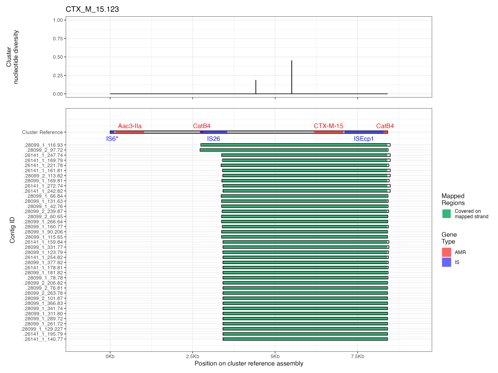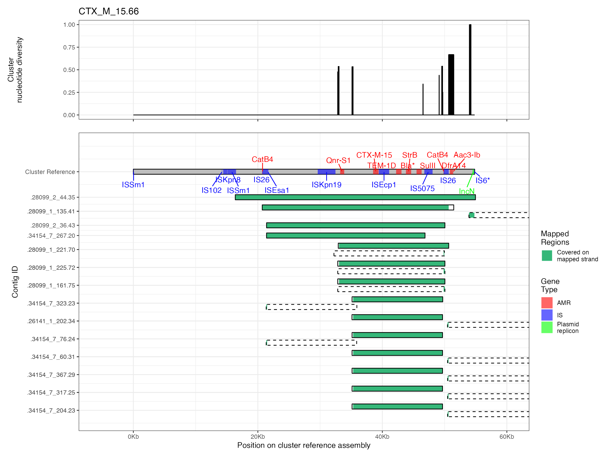
#> Warning: Removed 4 row(s) containing missing values (geom_path).
#> Removed 4 row(s) containing missing values (geom_path).
#> Removed 4 row(s) containing missing values (geom_path).#> Warning: Removed 1 row(s) containing missing values (geom_path).
#> Warning: Removed 1 row(s) containing missing values (geom_path).
#> Removed 1 row(s) containing missing values (geom_path).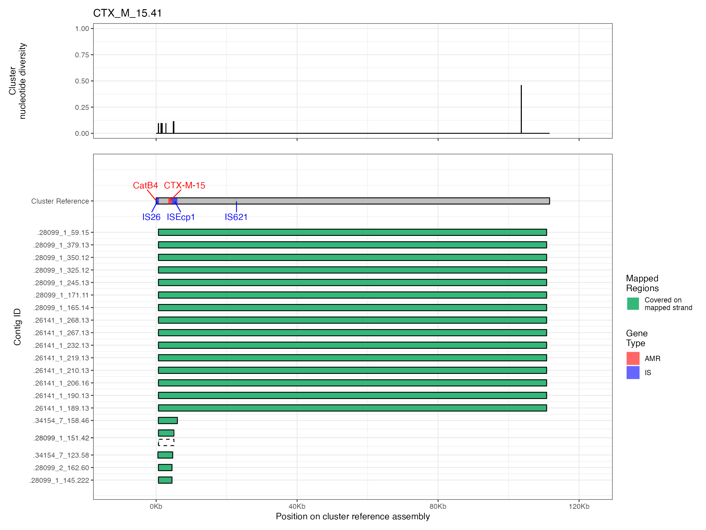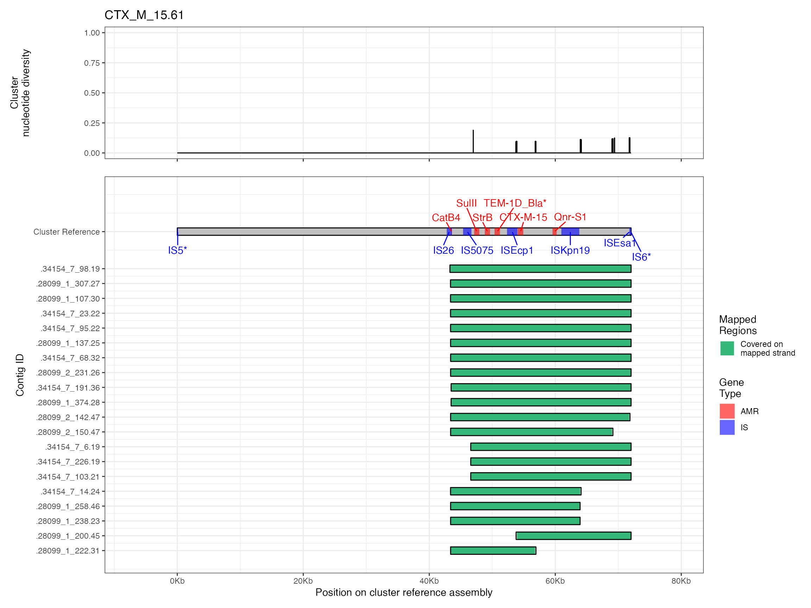
#> Warning: Removed 2 row(s) containing missing values (geom_path).
#> Warning: Removed 2 row(s) containing missing values (geom_path).
#> Removed 2 row(s) containing missing values (geom_path).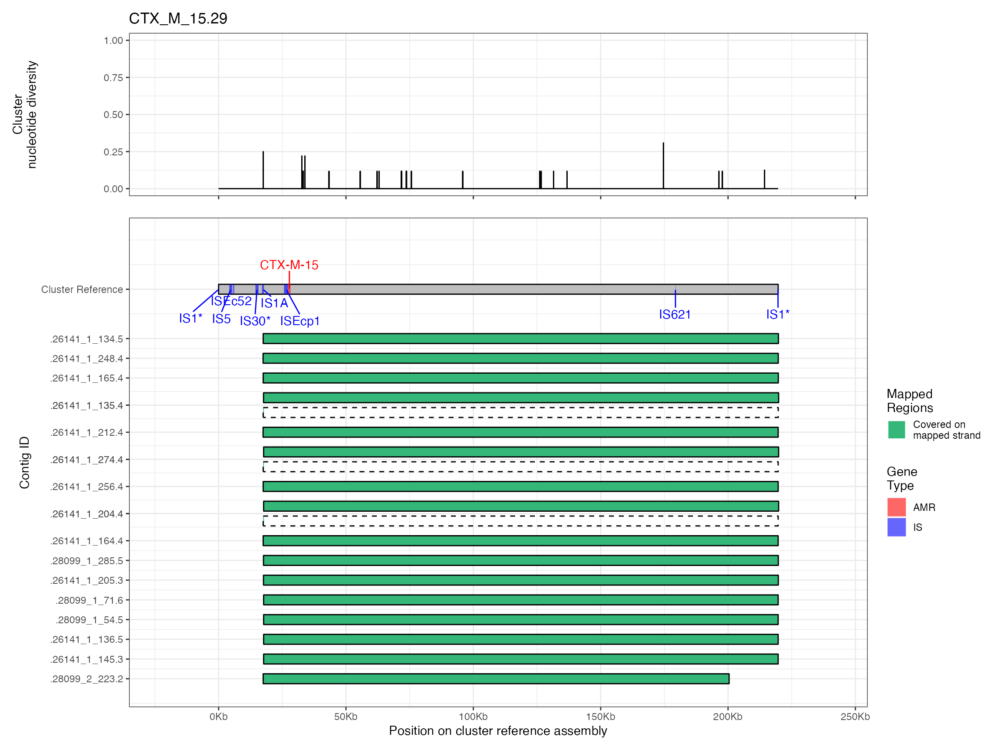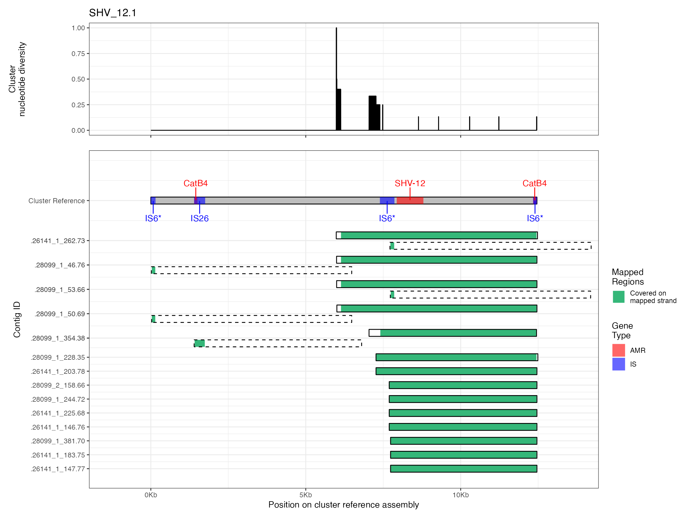